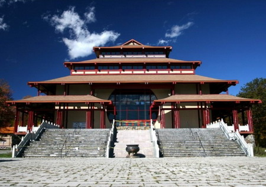
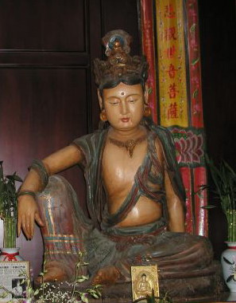

简介纽约庄严寺
冯冯
中国大陆到处有名山古刹，旅游参拜一年也拜不完。在美加的天然风景虽然壮丽，深具天然野趣，却非常缺少像中国大陆的深厚文化遗产，更缺少名山古刹与古迹。
在缺少中国佛教名山古刹的美国，近年也有些善信仁者，发心建造中国式佛寺，颇有规模，其中的侔者，在西岸有佛光山西来寺，在东岸有纽约州庄严寺，两者并称一时瑜亮，风格各有千秋！西来寺的佛殿，以宏伟豪华见称，位处洛杉矶市郊，方便信徒参拜及参加法会，仪轨隆重庄严，人才鼎盛。法会常被电视介绍，远近知名，万众景从。庄严寺则距纽约市区甚远，约有两小时车程，位于湖光山色之中，占地千余英亩，清幽雅致，极具山林之幽，殿宇仿效唐代古刹，朴素无华，环境清静，钟鼓山岚，烟波湖光，令人如置身中国深山古寺，每逢节日，亦有数千之众，不远而来，参加法会，亦修禅静，一洗尘俗，冬春雪景，琼林玉宇，冰湖雪泊，似是仙境。
两所名刹，风格回异。各有特色，各有信徒，也各有游客观光，不少人是两边都去参拜，各有心得，无不充满法善。
关于西来寺，媒体介绍甚多，因此较为人所熟知。关于庄严寺，则较少被传媒介绍，可能是因为地处偏辟山林，交通不便。我所见到的推介，是纽约时报报导，地方新闻版的全页图文，报告庄严寺大雄宝殿开光盛典。特别刊登嘉瓦仁波切参与开光之照片。开光盛典，主礼者是三位佛教领袖，包括悟明长老，与该寺主持明光法师，由于达赖是世界级名人，媒体不免就以他为新闻焦点。也就是吸引了很多非信徒注意那万人法会。
 不过媒体忽略了庄严寺的千年唐代观音塑像。那是一座侧右腿的坐姿塑像，是唐代中叶的作品，一共只有三座，其中此一座不知如何被移来美国，已经残缺损伤，拥有者交请一位青年雕塑家修补，却无再来取回，事隔四五十年，仍存于小楼顶堂，后来，年迈的艺术家与夫人将该像捐献给庄严寺。该寺的主要大护法沈家桢博士请一位中国名家来予以全部修复，供奉在观音殿上，此段千年观音像传奇，吸引无数信徒诣寺参拜赞叹不已，非信徒也很多去参观。
除了这座在美洲独一无二的千年观音像是最大吸引，该寺的居和如纪念图书馆的藏书也是很大的吸引重点，吸引了数以百计的学者，前往研究佛学与比较宗教。居和如是沈家桢博士的夫人，他们伉俪，毁家捐建庄严寺，不遗余力，原是美国航业钜子的沈家桢博士，把所有的轮船卖掉，购买此处山林湖泊千亩之地，建成庄严寺。创立宗教研究所，请著名于世界的工程设计家贝聿铭博士设计观音殿，悉依唐代古刹风格，不用铁钉。又陆续增建了大雄宝殿与其他建筑物，延请高僧大德驻锡讲经传法。对于做学问的学者而言，和如纪念图书馆实在是最大的宝库，因此，学人纷淼而至。从事研究，又制作了佛经光碟发行，以利世人。
庄严寺另一吸引，是联合各宗教祈祷大会，数次邀请各大宗教人士来寺联合祈祷，从电视与传媒刊物所见，附近的天主教圣玛利诺教会的四五十位修士修女，应邀诣寺，与佛教徒缁素，一同祈祷世界和平，两教信徒，分立两侧，于千年观音像下，先后以其本教仪轨祈祷，各唱各的唱诵，各念各的祷文经文，会后，庄严寺招待素餐，双方一同进食，交换心得，此种和谐相处的法会，可能是世上唯一的。假如世上宗教都能如此和谐互相尊敬合作，对于促进世界和平，是必有一定贡献的。很可惜，只有天主教愿意与庄严寺合作，其他宗教均无任何热心反应。
倘若往游美东，不妨去参拜庄严寺，将有另一种心灵经历。不过，未必见得到已经退休隐居的沈家桢博士，假如运气好，就可能得聆他的不定期的演说开示。
网注：沈家桢居士已于2007年11月27日往生。
游览庄严寺，不妨顺游距离不远，一河之隔的西点军校，不过须要预约。参观这所著名的美国军校，又是另一种经验与感受。
庄严寺怎么走？
（一）从纽约市出发，向北，走八十七号公路，从第五号出口，街名（RT100 N CENTRAL AVE），往北，在第二灯左转，进入SPRAIN BROOK PARKWAY NORTH ，再向前转入TACONIC STATE PARKWAY ，向北，走廿七英里，从三０一东出口（CARMEL），再在STOP SIGN右转，即到庄严寺大门入口。
（二）从皇后区出发：过白石桥，走HUTCHINSON RIVER PARKWAY WEST，接第六出口，就到SPRAIN BROOK PARKWAY NORTH)，以下与（一）同。
图片出处
原载《佛网》网站
2000 年 ── 2002 年